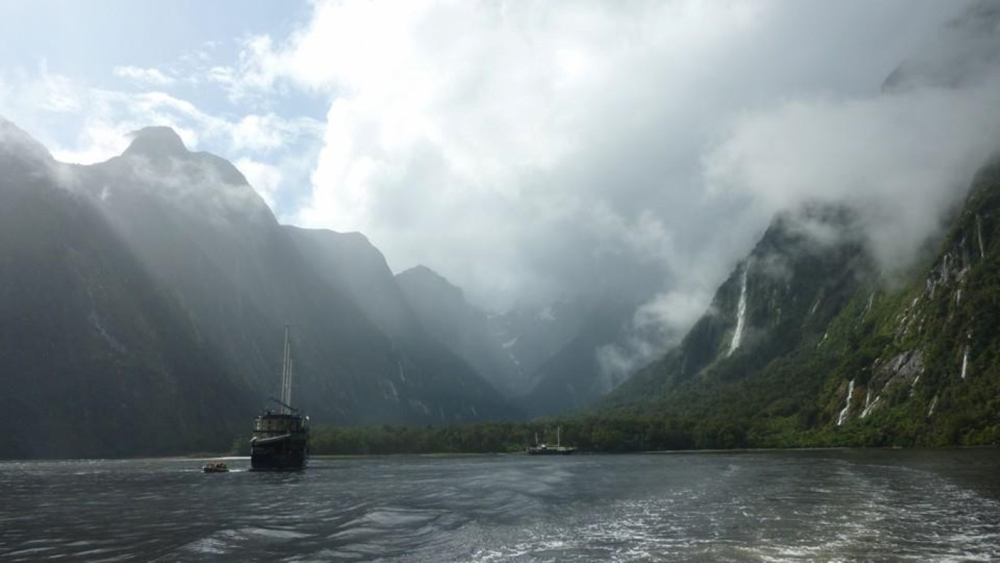
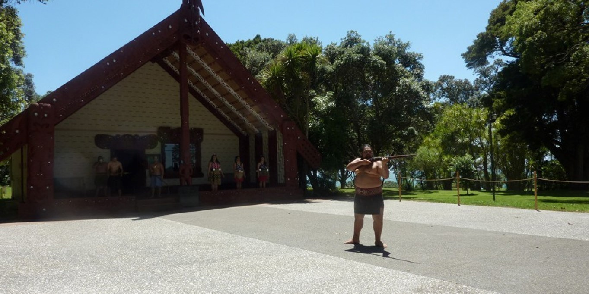
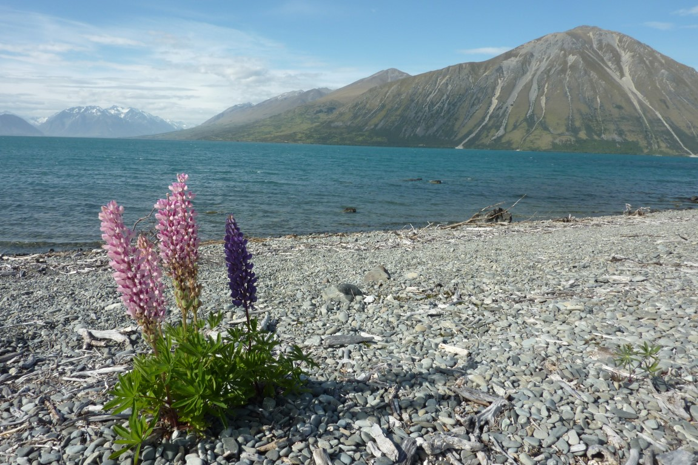
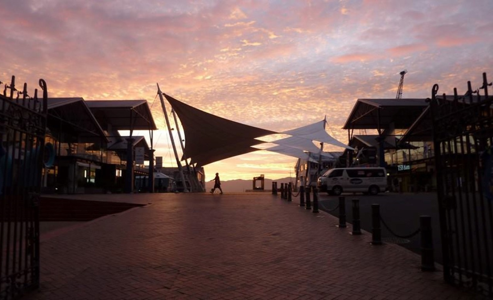

Milford Sound
Milford Sound
Tongariro. Took me 6 hours to walk it.
Tongariro Crossing
Waitangi Treaty Grounds
Mount Cook
.JPG)
Mount Cook
Lake Ohau
.JPG)
Hobbiton!
.JPG)
Hobbiton!
View from my hostel window, Motueka
.jpg)
Waiheke Island, it's a ferry ride from Auckland. In my opinion it's the only reason to go to Auckland.
.jpg)
It's a wine island. It's full of vineyards...
.jpg)
...And beautiful beaches
.jpg)
Queen Charlotte Sounds. I worked in Furneaux Lodge, the place in the center of this image, for about 5 weeks. Bliss.
.jpg)
Accessible only by water taxi, unless you have a boat
.jpg)
The adorable Fantail
.jpg)
The Forgotten World Highway. A part of our Paihia Room One road trip!
.jpg)
The Forgotten World Highway
Wellington
Wellington, a sunrise!
Wharariki Beach
Wharariki Beach
The walk to Farewell Spit
View of Golden Bay and another sunrise
Big fat pig in Takaka
My "little" walk to the outskirts of Abel Tasman National Park ended with one thoroughly lost English idiot somewhere in Abel Tasman National park
I couldn't believe it when I stumbled across the TARDIS in Napier!
And a TARDIS lift in Wellington!